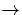
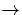

This structure (Fig. 1b) has D2d symmetry with four Si-O bonds
of length 1.710 Å. These are shorter than those in VO and lead to
higher frequency vibrations. They are, however, longer than those of
Oi (1.596 Å [94]), and the defect is still tensile.
The Si-O-Si angles are 147 and the O-O separation is
2.61 Å. There are six LVMs (see Table 5.1). The
highest at 807 cm-1 are E modes and represent independent
motion of the two O atoms. There are no additional modes in the mixed
O-isotope case. The mode at 656 cm-1 represents stretch of the
O-O bond and is IR inactive. The E mode at 574 cm-1 does
display coupled motion of the O atoms. This mode then gives
additional O-O bands in the mixed isotopic case. There are no gap
levels associated with the defect. The LVM at 807 cm-1 is about
90 cm-1 below that possibly assigned to the defect, but no other
modes have been reported. It has good agreement with the experimental
isotope shifts, and shows the correct upwards shift from VO
 VO2.
and the O-O separation is
2.61 Å. There are six LVMs (see Table 5.1). The
highest at 807 cm-1 are E modes and represent independent
motion of the two O atoms. There are no additional modes in the mixed
O-isotope case. The mode at 656 cm-1 represents stretch of the
O-O bond and is IR inactive. The E mode at 574 cm-1 does
display coupled motion of the O atoms. This mode then gives
additional O-O bands in the mixed isotopic case. There are no gap
levels associated with the defect. The LVM at 807 cm-1 is about
90 cm-1 below that possibly assigned to the defect, but no other
modes have been reported. It has good agreement with the experimental
isotope shifts, and shows the correct upwards shift from VO
 VO2.
Since performing this work, new symmetry investigations by Lisby and
Bech Nielsen [83] have determined the symmetry of the
defect giving rise to the 889 cm-1 defect as being D2d.
Initial uniaxial stress experiments determined that it was either
C2v or D2d, but the resolution of the fits was not able to
distinguish between the two. They have since performed stress induced
reorientation experiments, where stress is applied at 200 C,
maintained while the sample cools, and then released
[83].
C,
maintained while the sample cools, and then released
[83].
If a defect is either tensile or compressive it will tend to reorient
itself at the higher temperature with respect to the applied stress
field. If, for example, this stress field is applied along  100
100 ,
and the defect has inequivalent
,
and the defect has inequivalent  100
100 directions, this means the
defects will preferentially align. If the defect is tensile along
directions, this means the
defects will preferentially align. If the defect is tensile along
 100
100 it will line up with the stress field, and if compressive
along
it will line up with the stress field, and if compressive
along  100
100 it will line up along one of the two remaining
unstressed
it will line up along one of the two remaining
unstressed  100
100 directions. If the defect symmetry means it has
no preferential
directions. If the defect symmetry means it has
no preferential  100
100 direction, they will remain randomly
distributed with respect to the stress direction.
direction, they will remain randomly
distributed with respect to the stress direction.
The sample is then cooled to quench this orientation in, and the
stress removed. If the sample is now probed using FTIR along
different  100
100 directions, if the defects are preferentially
aligned along one of these the signal will exhibit dichroism,
i.e. the signal will appear stronger in one of the
directions, if the defects are preferentially
aligned along one of these the signal will exhibit dichroism,
i.e. the signal will appear stronger in one of the  100
100 directions than the others. In practise, as the chosen
directions than the others. In practise, as the chosen  100
100 direction of stress is known, applying FTIR along one of the other
direction of stress is known, applying FTIR along one of the other
 100
100 directions and comparing to the sample before stress is
sufficient to show such dichroism. If the defect possesses no
preferential
directions and comparing to the sample before stress is
sufficient to show such dichroism. If the defect possesses no
preferential  100
100 direction, there will be no alignment effect
and the signal before and after stress will be the same.
direction, there will be no alignment effect
and the signal before and after stress will be the same.
Stress applied in this way for VO2 along  100
100 and
and  110
110 produced dichroism whereas
produced dichroism whereas  111
111 stress did not. This is
consistent with D2d symmetry but not C2v (which has
inequivalent
stress did not. This is
consistent with D2d symmetry but not C2v (which has
inequivalent  111
111 directions). This result is sufficient to
exclude both the V2O model and the C2v structure described
below, and coupled with our theoretical investigation show that the
defect responsible for the 889 cm-1 line is indeed VO2.
directions). This result is sufficient to
exclude both the V2O model and the C2v structure described
below, and coupled with our theoretical investigation show that the
defect responsible for the 889 cm-1 line is indeed VO2.
While investigating this structure we examined various other possible
configurations of V + O2, including a C2v structure where the
oxygen atoms were inserted in Oi positions in bonds neighbouring
the vacancy, one either side along the same  110
110 orientation. Unfortunately we found that this was a lower energy
structure than the VO2 model presented here. We investigated
varying the structure to see if we were inadvertently trapped in some
local minimum, and also tried varying the basis set, however in every
case it remained lower in energy. We also varied the cluster surface
treatment, holding the surface H atoms fixed, allowing them to move
freely, and constraining them to move in a quadratic spring potential,
but again none of these reversed the energies.
orientation. Unfortunately we found that this was a lower energy
structure than the VO2 model presented here. We investigated
varying the structure to see if we were inadvertently trapped in some
local minimum, and also tried varying the basis set, however in every
case it remained lower in energy. We also varied the cluster surface
treatment, holding the surface H atoms fixed, allowing them to move
freely, and constraining them to move in a quadratic spring potential,
but again none of these reversed the energies.
This model cannot be the correct one for several reasons; it does not have the correct (D2d) symmetry and the vibrational modes are wrong. In addition there is coupling between the oxygen atoms, so multiple modes are observed in the mixed isotope case in contradiction with experiment. We are unable at present to explain why we obtained the energies incorrectly, but note that J. Chadi also found that addition of Oi to a VO centre was an endothermic process [95]. One possibility is that there is some charge redistribution to the cluster surface which helps to stabilise pure V-based structures, however this alone is insufficient to explain the difference. Alternatively our charge density modelling may be inaccurate for vacancy-based structures, and the addition of gradient corrections to the exchange-correlation energy or the use of a plane wave basis set may overcome this problem. Recent tests with a new supercell version of AIMPRO that avoids intermediate fits to the charge density correctly gives the D2d structure as 1.918 eV more stable than the C2v structure; further investigation is required to determine whether this is an effect of the basis or the supercell.